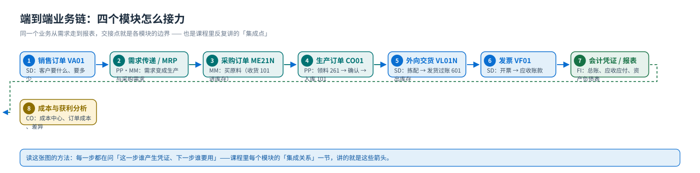
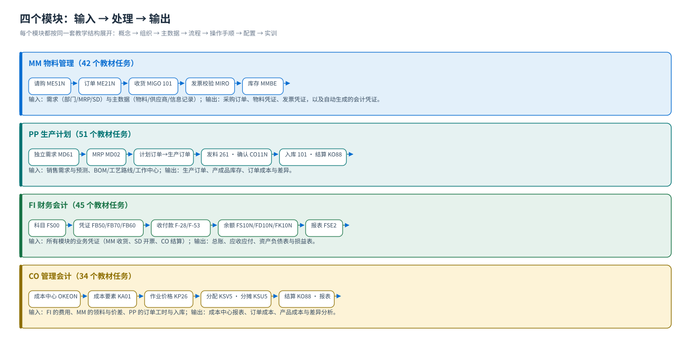

SAP 模块培训课程
MM · PP · FI · CO —— 从总体到细节、从概念到操作手顺
四个模块、同一套教学结构：先建立整体印象（模块管什么、与谁交接），再逐层下到组织、主数据、流程、操作手顺，最后到后台配置与练习。所有截图取自教材《S4.docx》的真实 SAP GUI 画面，可逐张回原稿核对。
4个模块MM · PP · FI · CO
56页课程页（每模块 14 页）
172个任务教材原书的全部任务，逐个走查
1411处实机截图引用
四个模块（点进去开始学）
MM 物料管理（Materials Management）
从「谁要买」到「钱付出去」：采购申请 → 采购订单 → 收货（库存与物料凭证）→ 发票校验（与 FI 对账）→ 付款。外加库存管理与移动类型。
PP 生产计划（Production Planning）
把「卖什么」变成「造什么、造多少、什么时候造」：需求管理（MD61）→ MRP（MD02/MD05）→ 订单（MD04 → 生产订单）→ 车间执行（发料·确认·收货）→ 订单成本与差异结算。
FI 财务会计（Financial Accounting）
把业务翻译成会计：公司代码与科目表定坐标，FS00 建科目、FD01/FK01 建客户供应商，FB50/FB70/FB60 录凭证，F-28/F-53 收付款与清账，FS10N/FD10N/FK10N 看余额，最后出资产负债表与损益表。
CO 管理会计（Controlling）
回答「钱花在哪里、花得合不合理」：成本控制范围定边界，成本要素与成本中心收费用，作业类型与价格把费用分出去，期末分配（KSV5）/分摊（KSU5）/结算（KO88）把账走平，报表看计划实际差异。
端到端业务链
{kind=link}

模块地图：每个模块的输入与输出
{kind=link}

学习路线（建议顺序）
① 先看总体本页 + 任选一个模块的概念页→② 按模块深入组织 → 主数据 → 流程→③ 练操作每模块的三个流程页 + 五个实训→④ 配后台SPRO 配置页（教材任务逐个走查）→⑤ 自测每模块 30 题，合格 75%
- 业务线顺序（推荐给业务顾问）：MM → PP → SD（见 SD 课程站）→ FI → CO。理由是先把「买」和「造」看清，再看不「卖」，最后落到账与成本。
- 财务线顺序（推荐给财务同事）：FI → CO → MM → PP，先建立账的概念，再看业务如何进账。
- 只学一块：直接进对应模块，按导航从左到右走完 14 页即可；每页底部都有「其他模块」的入口。
- 对照 SD 课程站：销售与分销的完整课程（16 页）在另一个站（
sap_cn/，面向sap-cn-sd.vercel.app），当本站讲到「SD 负责卖」时可以对照看。
四个模块共用一套教学结构（14 页）
| 页 | 内容 | 为什么要这一页 |
|---|---|---|
| 首页 index.html | 课程地图 + 学习路线 + 场景值 | 先建立整体印象，知道要学什么 |
| 概念 concept.html | 模块管什么、产出什么凭证、与邻居的分界、常见误解 | 不理解边界，后面每个动作都会问「这归谁管」 |
| 组织 org.html | 组织结构与分配关系 | SAP 里「先有组织，才有数据和单据」 |
| 主数据 master.html | 主数据分层与关键字段 | 绝大多数报错的根因在主数据 |
| 流程 flow.html | 端到端流程 + 单据流 + 记账影响 | 把零散操作串成一条线 |
| 流程① ② ③ | 三篇局部操作详解（教材任务逐屏走查） | 当操作手册用 |
| 配置 config.html | 教材 IMG 路径 + 手顺 + 原始画面（分组覆盖全部任务） | 后台是前台的镜像；按任务号对进度 |
| 实训 practice.html | 五个动手任务 + 完成基准 | 从「看懂」到「做过」 |
| 讲师 instructor.html | 课时 / 板书 / 必问 / 评分 | 直接可用的授课计划 |
| 学员 worksheet.html | 记入表（可打印） | 把单据号与分录记下来，才有作业可交 |
| 自测 quiz.html | 30 题 · 合格 75% | 查漏补缺，错题回对应页 |
| 术语 glossary.html | 中英对照 + T-code + 常用表 | 随时回查 |
素材与边界
| 项 | 说明 |
|---|---|
| 真实截图 | 取自教材文档《S4.docx》（425 页、内嵌 1385 张图）的 MM / PP / FI / CO 四个模块，共 940 张，保留原图文件名（图注里的「原图 imageNNNN」），可回 Word 原稿逐张核对 |
| 任务与路径 | IMG 路径、手顺步骤、T-code 全部由 work/modules_model.json 渲染（来自教材解析结果），页面不手抄 |
| 自绘图 | 流程图 / 结构图 / 思维导图 / 泳道图由本站用纯 Python 生成 SVG，图注标注「本站自绘 SVG」 |
| 标准值 | 文中给出的数值都是教材环境的场景值（颐宁公司），页面同时给出「在自系统里怎么确认」（F1/F4、IMG 路径、表名） |
| 没有系统也能学 | 所有实训都写了「达不到环境时的替代做法」（看图说话 / 纸上推演） |
与 SD 课程站的关系SD（销售与分销）已有独立课程站（
sap_cn/）。本站覆盖 MM / PP / FI / CO 四个模块，并在每模块的「集成关系」里指出与 SD 的交接点（如 MM 的发货 601、FI 的应收账款、PP 的需求来源）。